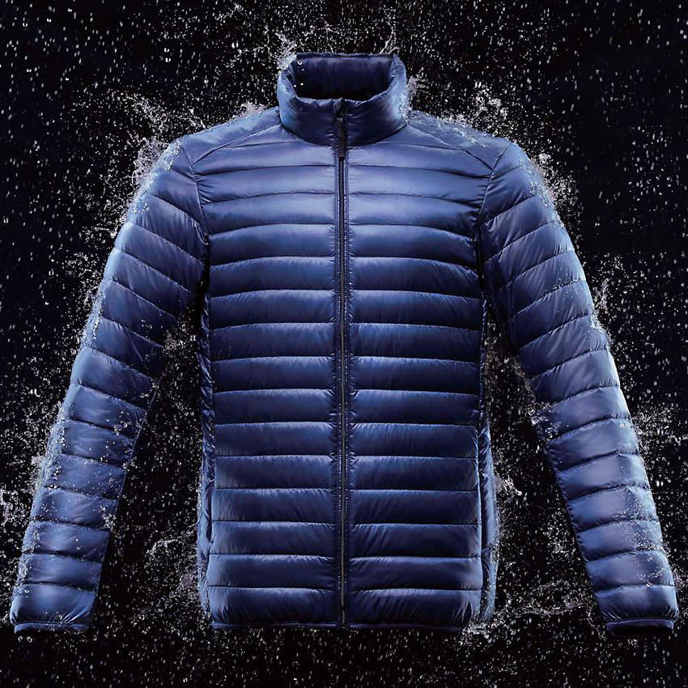

Durable Water Repellency
PlumaFill synthetic insulation and a patent-pending construction technique create an ultralight jacket with the best warmth for weight we’ve ever achieved—down or synthetic.
UNIQLO's ULD is a must-have, inclement winter weather—it's warm and water-repellent. It's not cumbersome and restrictive to movement, and it can of course be packed into its own portable bag.
PlumaFill synthetic insulation and a patent-pending construction technique create an ultralight jacket with the best warmth for weight we’ve ever achieved—down or synthetic.
PlumaFill synthetic insulation and a patent-pending construction technique create an ultralight jacket with the best warmth for weight we’ve ever achieved—down or synthetic.
PlumaFill synthetic insulation and a patent-pending construction technique create an ultralight jacket with the best warmth for weight we’ve ever achieved—down or synthetic.
PlumaFill synthetic insulation and a patent-pending construction technique create an ultralight jacket with the best warmth for weight we’ve ever achieved—down or synthetic.
There are many weaving machines to make ULTRA LIGHT DOWN at the factory. The sound of the machines is like walking into a large water fall.

Artists have surprising and diverse approaches to using Tilt Brush. From the hyperrealistic to the roughly sketched, each artist developed a unique style and found new ways to defy our expectations with the medium.
